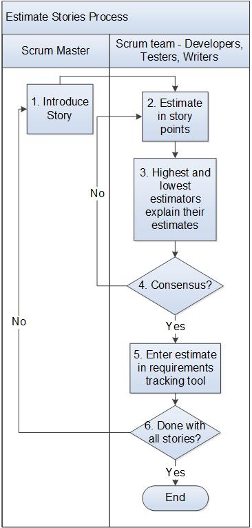

Estimate Stories Process¶
This process describes how a team estimates or re-estimates Stories for release or sprint planning. The objective of this process is for the team to reach a common understanding of the sizing of each user story. Teams should modify this process as needed to meet what works best for their team.
Entry Criteria |
Stories have been entered. Release planning or Sprint planning is under way. |
Inputs |
Stories |
Exit Criteria |
All stories have been estimated, or re-estimated |
Outputs |
Stories contain estimates. |
Activities¶

Step # |
Activity Name |
Description |
|---|---|---|
1 |
Introduce Story |
The Scrum Master reads the user story to the team. The team asks questions as needed to clarify the meaning of the story. |
2 |
Estimate using story points |
Each team member independently estimates the user story using story points. Story points are an arbitrary scale of how complex a story is compared to other stories. Teams decide for themselves what a story point means to them. Choosing a story that is worth one story point can help the team to compare other stories to the one point story. This user story can be anywhere in the release and should be used as a single reference for all estimates throughout the release. It is a reference point for the “simplest” user story. If this is an initial estimate, the team should not try to be too granular in estimating. Using a scale of Fibonacci numbers like 1, 2, 3, 5, 8, 13, 21, 34 points keeps estimates high level. Teams might choose to do their individual estimates before the meeting. |
3 |
Highest and lowest estimators explain their estimates |
Each team member shares their estimates. If estimates are far apart, the highest and lowest estimator explain why they estimated the user story in that way. The team asks questions again as needed to further clarify the meaning of the story. |
4 |
Consensus reached? |
The team members all estimate again. Estimating and explaining high and low estimates continues until consensus is reached. |
5 |
Enter estimate in requirements tracking tool |
The team enters the estimate in the Requirements Management System (e.g., Jira Agile) |
6 |
Done with all stories? |
The team continues until all user stories are estimated. |
Change Log¶
Date |
Change Request ID |
Version |
Change By |
Description |
05/21/2020 |
N/A |
0.1 |
Shree Vidya Jayaraman |
Initial Draft |